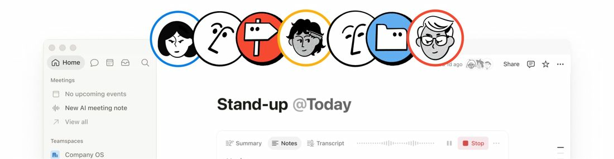

Notion Review: The One Tool That Tries to Be Every Tool
7.1 Sensible Score, out of 10
Ratings by business type
Best suited to: consultants, professional services, engineering and project led small firms, operations teams, writers and creators running a business from one workspace.

Sensible Stack: Streamlining business, whatever your size
Review status: USED IT. This is the project tool our reviewer actually settled on for day to day capital project work, run solo: documents, budgets, task lists and timelines in one place.
The short answer
If you run projects solo or in a small team and want one workspace for the documents, the budget, the task list and the plan, Notion is the strongest all rounder here, and its free tier is generous enough that many solo users will never pay. The price is a learning curve up front, a Gantt chart that is not really a Gantt chart, and a constant temptation to go shopping for a better template instead of doing the work.
What it is
Notion is a workspace built from pages and databases. A page can be a procedure document; a database can be a task list, a budget tracker or a timeline; and the two link together, so a job can point at the written procedure it follows. That linking is the heart of it. Most project tools store tasks. Notion stores the whole working environment around the tasks.
Where it wins
- Customisation, full stop. Once you learn the commands and the database basics, you can bend it to a new use in an afternoon: a snagging list this week, a document register next week
- The free tier. For one person it is unlimited pages and blocks with no time limit, which is why it beat ClickUp in our own head to head. The caps that bite (a 5 MB file upload limit, a short page history) bite gently
- Documents tied to jobs. Keeping written procedures in Notion and linking them to the tasks that use them is the single most useful pattern we found, and none of the board based tools do it as naturally
- A template ecosystem the size of a small country. Whatever you are trying to build, somebody has built it. See also: where it frustrates
- It can link to Finta, which syncs live bank balances and transactions into Notion. A project budget that watches the actual bank account is a trick none of the other tools in this series can match
Where it frustrates
- The learning curve is real. Notion charges it up front, where tools like monday.com and ClickUp feel easier on day one. Budget a weekend of fiddling before it clicks
- The template rabbit hole. There is always a better template. Buying templates, free or paid, can become a hobby that quietly replaces the project management it was meant to support. If you recognise yourself in that sentence, set a rule: one template, adapted, then stop
- The Gantt is not a Gantt. The Timeline view looks the part, but dependencies are finish to start only, dates do not shift automatically when a predecessor moves, and there are no baselines, no critical path and no workload view. For light planning it is fine. For a real waterfall schedule, it is a picture of a plan, not a model of one
- Task progress is build it yourself. Completing every sub item does not mark the parent done, and there is no completion counter until you build one from rollups and formulas. Buildable, yes. Built in, no
- The goalposts move. Notion folded AI into the Business plan as unlimited in 2025, then metered it with credits in October 2026 (the AI section below has the detail). The product is good enough that most users stay anyway, but buy it for what it is this quarter, not for promises about what is included
The AI, and its price tag
Notion AI covers writing help, summaries, database autofill, agents and asking questions across your workspace, and it lives only on the Business and Enterprise tiers. The bigger catch is new: in October 2026 Notion replaced the unlimited AI those tiers were sold with in 2025 with a monthly credit meter. Each member now gets 1,500 Standard credits (Notion picks the model) and 500 Select credits (you pick the model, or run your own custom agents) a month. Credits do not roll over, cannot be pooled or shared, and when they run out the AI pauses until the reset unless a workspace owner buys top up credits at $10 per 1,000, which themselves expire at the monthly reset. A simple task on Auto costs about 5 credits; choose a premium model yourself and the same job can cost ten times that, which is how heavy users burn the month in a week. The frustration on Reddit and in the Notion community is less the amounts than the pattern: unlimited became a meter inside eighteen months. Our standing duplication warning applies with knobs on. If you already pay for a general AI subscription such as ChatGPT, you may now be paying for the same trick twice, and the second copy runs out.
Reporting and dashboards
Notion can chart a database and assemble a decent status page, and a well built project home page reads well for a client or an exec. It is hand made reporting, though: every visual is something you built from your own databases, and there is no portfolio roll up waiting for you at the top. Good enough for a small operation that maintains it, weak for anyone expecting reporting out of the box.
Pricing
Checked November 2026. Free for individuals, properly usable. Plus is $10 per seat per month billed annually, Business $20, and Business is where the included AI lives. One trap worth knowing: the unlimited blocks on the free plan are a solo privilege. Add a second member to the workspace and the free block limit drops to 1,000 in total, which you will hit faster than you expect.
Verdict
For a solo project manager, this is the one to beat, and it is the one our reviewer kept. Pay the learning curve once, resist the template shop, accept that the timeline is a sketch rather than a scheduling engine, and you get documents, budgets and tasks living together in a way nothing else here quite matches. Teams that need hard scheduling should look at ProjectManager or Wrike below and treat Notion as the document home alongside.
Try it: Visit Notion
Research note: Pricing and plan details checked against vendor pages and published comparisons, November 2026. Plans change, confirm before buying. Usage history is the author's own.